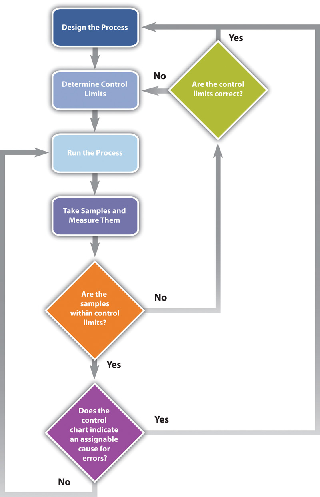
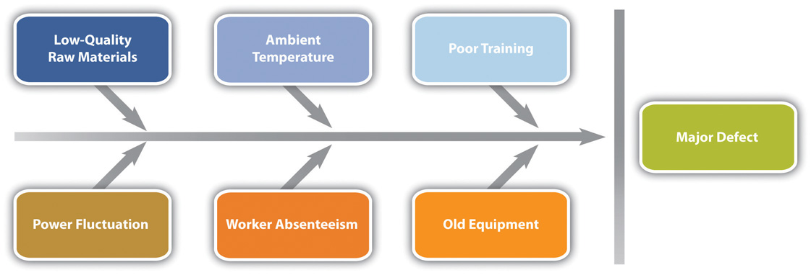
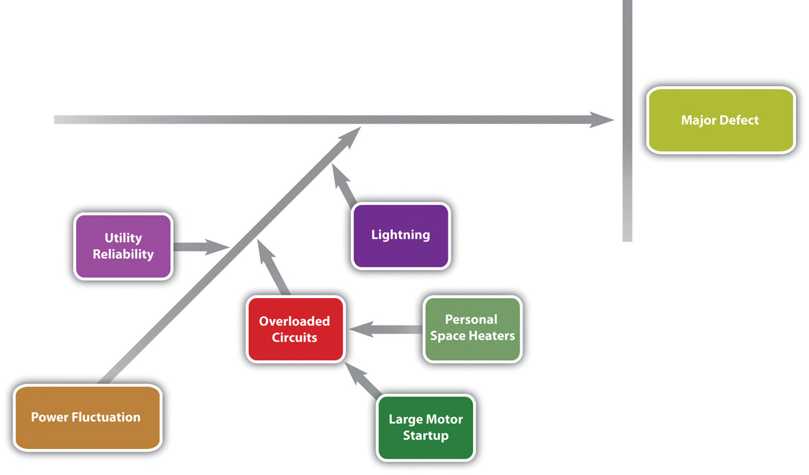
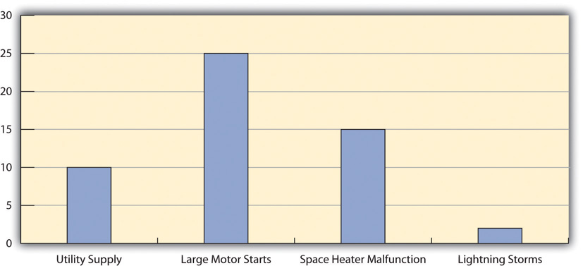
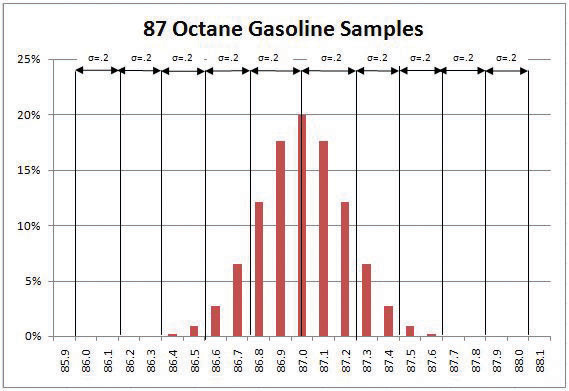

High quality is achieved by planning for it rather than by reacting to problems after they are identified. Standards are chosen and processes are put in place to achieve those standards.
During the execution phase of the project, services and products are sampled and measured to determine if the quality is within control limits for the requirements and to analyze causes for variations. This evaluation is often done by a separate quality control group, and knowledge of a few process measurement terms is necessary to understand their reports. Several of these terms are similar, and it is valuable to know the distinction between them.
The quality plan specifies the control limits of the product or process; the size of the range between those limits is the toleranceVariation allowed on either side of the mean, often shown with the ± symbol to mean plus or minus.. Tolerances are often written as the mean value, plus or minus the tolerance. The plus and minus signs are written together, ±.
The petroleum refinery chose to set its control limits for 87 octane gasoline at 86 and 88 octane. The tolerance is 87 ± 1.
Tools are selected that can measure the samples closely enough to determine if the measurements are within control limits and if they are showing a trend. Each measurement tool has its own tolerances. For example, if a machine is making rods whose diameters should be 10 mm ± 0.01 mm, you need a measuring device that can accommodate a rod that is 10 mm wide but can measure that width to a much smaller tolerance than 0.01 mm, such as 0.001 mm.
The choice of tolerance directly affects the cost of quality (COQ). In general, it costs more to produce and measure products that have small tolerances. The costs associated with making products with small tolerances for variation can be very high and not proportional to the gains. For example, it might double the manufacturing cost to improve a process from a 4 σ to a 5 σ (lower tolerances from 25 percent of control limits to 20 percent), which might only reduce the number of parts that are out of control from 4 per 100,000 to 6 per 10 million (see Figure 10.4 "Meaning of Sigma Levels"). The cost of failure of only 4 parts per 100,000 might be much less than the cost of prevention.
Clients provide specifications for the project that must be met for the project to be successful. Meeting project specifications is one definition of a project success. Clients often have expectations that are more difficult to capture in a written specification. For example, one client will want to be invited to every meeting of the project and will then select the ones that seem most relevant. Another client will want to only be invited to project meetings that need client input. Inviting this client to every meeting will cause unnecessary frustration. Listening to the client and developing an understanding of the expectations that are not easily captured in specifications is important to meeting the client’s expectations.
Project surveys that capture how the client perceives the project performance provide the project team with data that is useful in meeting client expectation. If the results of the surveys indicate that the client is not pleased with some aspect of the project, the project team has the opportunity to explore the reasons for this perception with the client and develop recovery plans. The survey can also help define what is going well and what needs improved.
Planning for quality is part of the initial planning process. The early scope, budget, and schedule estimates are used to identify processes, services, or products where the expected grade and quality should be specified. Risk analysis is used to determine which of the risks the project faces could affect quality.
Several different tools and techniques are available for planning and controlling the quality of a project. The extent to which these tools are used is determined by the project complexity and the quality management program in use by the client.
The quality management methodology required by the client is used. The project manager must provide the documentation the client needs to prove compliance with their methodology. There are several different quality management methodologies, but they usually have characteristics that are similar to the ones described previously in the text.
Many processes are more complicated than a simple sequence of related events that include several different paths. A flowchartDiagram of processes that have branches and loops based on decisions. uses standard symbols to diagram a process that has branches or loops. Diamonds indicate decisions, and arrows indicate the direction of the flow of the process, as shown in Figure 10.8 "Flowchart of a Quality Control Process".
Figure 10.8 Flowchart of a Quality Control Process
The process used to plan and assess quality can be described using flowcharts. They are useful for communicating processes that have logical branches that can be determined by simple yes or no questions. Flowcharting is also useful for discovering misunderstanding in project roles and responsibilities and communicating responsibility for work processes.
When products like shoes were made by hand, artisans would seek some degree of standardization by marking standard lengths for different parts of the product on their workbench. In modern management practice, if a particular method or product is a standard of quality, comparing your organization’s quality plan to it is called benchmarkingComparison of practices to standards or best practices in the same industry.. If a product or service is similar to something that is done in another industry or by a competitor, the project planners can look at the best practices that are used by others and use them as a comparison.
Because the cost of prevention is more often part of the project budget, the case must be made for increasing the project budget to raise quality. Some quality management programs, like Six Sigma, require that expenditures for quality are justified using a cost-to-benefit analysis that is similar to calculating the cost of quality, except that it is a ratio of cost of increasing quality to the resulting benefit. A cost-benefit analysis in some quality programs can take into account nonfinancial factors such as client loyalty and improvements to corporate image and the cost-to-benefit analysis takes the form of a written analysis rather than a simple numeric ratio. It is similar to determining the cost of quality (COQ).
Measuring for quality of manufactured products or use of repetitive processes requires taking samples. Specialists in quality control design a test regimen that complies with statistical requirements to be sure that enough samples are taken to be reasonably confident that the analysis is reliable. In project management, the testing experiments are designed as part of the planning phase and then used to collect data during the execution phase.
If some of the functions of a project are repetitive, statistical process controls can be used to identify trends and keep the processes within control limits. Part of the planning for controlling the quality of repetitive processes is to determine what the control limits are and how the process will be sampled.
When control charts indicate an assignable cause for a variation, it is not always easy to identify the cause of a problem. Discussions that are intended to discover the cause can be facilitated using a cause-and-effect or fishbone diagramGraphic representation of the contributing causes of a quality problem. where participants are encouraged to identify possible causes of a defect.
For example, a small manufacturing firm tries to identify the assignable causes to variations in its manufacturing line. They assemble a team that identifies six possibilities, as shown in the fishbone diagram below.
Figure 10.9 Cause and Effect Diagram
Each branch of the diagram can be expanded to break down a category into more specific items.
An engineer and the electrician work on one of the branches to consider possible causes of power fluctuation and add detail to their part of the fishbone diagram, as shown below.
Figure 10.10 Possible Causes of Power Fluctuation
When several quality problems need to be solved, a project manager must choose which ones to address first. One way to prioritize quality problems is to determine which ones occur most frequently. This data can be collected using a check sheetForm for recording the frequency of quality problems., which is a basic form on which the user can make a check in the appropriate box each time a problem occurs or by automating the data collection process using the appropriate technology. Once the data are collected, they can be analyzed by creating a type of frequency distribution chart called a histogramColumn chart that displays frequency of occurrence on the vertical axis.. A true histogram is a column chart where the width of the columns fill the available space on the horizontal axis and are proportional to the category values displayed on the x axis, while the height of the columns is proportional to the frequency of occurrences. Most histograms use one width of column to represent a category, while the vertical axis represents the frequency of occurrence.
The engineer and electrician place a recording meter on the electrical supply to the manufacturing area and instruct the building automation system to keep a log of voltage coming into the plant from the local utility and when it starts and stops large electrical fan motors. They create a check sheet to track the number of times that power dips or spikes due to lighting strikes or electric space heater malfunctions. They collect the data, count the number of occurrences in each category, and then chart the number of occurrences in a histogram, as shown below.
Figure 10.11 Histogram Showing Frequency of Power Problems by Likely Cause
A variation on the histogram is a frequency distribution chart invented by economist Vilfredo Pareto known as a Pareto chartColumn chart that shows frequency on the vertical axis sorted from largest to smallest with a line that shows the cumulative total., in which the columns are arranged in decreasing order with the most common on the left and a line added that shows the cumulative total. The combination of columns and a line allows the user to tell at a glance which problems are most frequent and what fraction of the total they represent.
The engineer creates a Pareto chart by sorting the data and adds a line to show total problems, as shown below. He concludes that about half of the electrical voltage problems are caused when one of the large electrical fan motors on the same circuit as the manufacturing line is shut down to conserve electricity by the energy management system and then restarted.
Figure 10.12 Pareto Chart with Problems in Decreasing Order and a Line Showing a Cumulative Total
The quality plan is produced during the initiation phase. The methods, procedures, and logic are described to demonstrate a commitment to a project of high quality. The plan identifies the products or services that will be measured and how they will be measured and compared to benchmarks. A flowchart demonstrates the logic and pathways to improve the plan.
During the execution phase, data are collected by measuring samples according to the design specified in the plan. The data are charted and analyzed. If variations are due to assignable causes, change requests are created.
Quality Management Plan
Consider a project in which you have been involved where there was a quality management plan or where such a plan was missing. Describe the effect of having or not having such a plan.